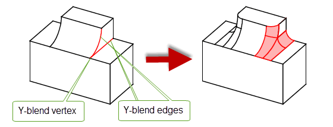
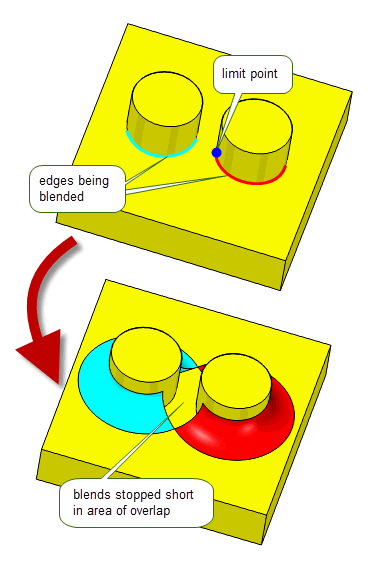

| |
Edge Blending Options |
| <<< Edge Blending Overview | Chapters | Edge Blend Overflows >>> |
This chapter explains the options available to control the type and shape of edge blends that you can create. Parasolid offers a wide variety of options to control the appearance of edge blends, some of which need to be controlled when setting the blend, and some of which need to be controlled when fixing the blend. This chapter is divided as follows:
This section describes options that need to be controlled when an edge blend is set using one of the blend setting functions PK_EDGE_set_blend_constant, PK_EDGE_set_blend_chain or PK_EDGE_set_blend_chamfer. It is divided as follows:
This section describes options that can be called from any of the blend setting functions PK_EDGE_set_blend_constant, PK_EDGE_set_blend_chain and PK_EDGE_set_blend_chamfer.
|
Note: For PK_EDGE_set_blend_chain, these options are available in the PK_EDGE_set_blend_chain_o_t options structure. For PK_EDGE_set_blend_constant and PK_EDGE_set_blend_chamfer, these options are available in a
properties
sub-structure (PK_blend_properties_t) of the function’s options structure unless otherwise stated. |
For all types of edge blends, except face offset chamfer blends, you can control the cross-section shape of the blend. By default, edge blends have a conic cross-section. However, you can also create curvature-continuous blends (also known as G2-continuous blends) which have a cross-section that has the same curvature as each wall at the contact points, and blends that have a linear cross-section (known as chamfer blends).
Note: PK_EDGE_set_blend_chamfer does not have the
xs_shape
option, therefore all blends created with this function will have a chamfer cross-section shape. |
You use the
xs_shape
option in PK_EDGE_set_blend_constant and PK_EDGE_set_blend_chain to control the cross-section of a blend. This field takes the following values:
|
The shape of the blend is linear with position continuity. Note: This value can only be set when using PK_EDGE_set_blend_chain. |
Figure 76-1 G2 and non-G2 blends
The following conditions apply when PK_blend_xs_shape_g2_c is enabled:
ov_cliff ov_cliff_end |
||
rho_type |
In addition, G2 and non-G2 blends cannot be used in the same call to PK_BODY_fix_blends.
Curvature-continuous blends can also be used in face blending. See Section 78.5.3, “Curvature-continuous cross-sections”, for more information.
The following conditions apply when PK_blend_xs_shape_chamfer_c is enabled:
n_positions |
||
primary_sizes |
Both members of the option must be equal, if not they must be NULL. |
|
secondary_sizes |
Both members of the option must be equal, if not they must be NULL. |
Figure 76-2 Constant chamfer edge blends on a facet body
Note: If your model contains facet geometry, the
xs_shape
option must be set to either PK_blend_xs_shape_conic_c or PK_blend_xs_shape_chamfer_c. |
|
Note: The value PK_blend_xs_shape_unset_c should not be used with edge blend or face-face blend setting functions and is reserved for use by legacy code: see Section 78.5.8, “Options” for more information. |
When setting a blend, it is sometimes the case that the blend defined by the parameters specified in the call to the blend setting function would create a blend that lies outside the faces adjacent to the edge being blended. Such a blend cannot be fixed, because it would not produce a valid result. Parasolid therefore provides you with options that let you control how to change the blend definition so that fixing the blend is possible.
The process of changing the blend definition to ensure that the blend is valid in a given configuration is known as overflowing the blend. This section describes the options available in the blend setting functions for controlling blend overflow.
For a complete description of blend overflows, see Chapter 77, “Edge Blend Overflows”.
For more information, see PK_blend_properties_t.
|
Note: It is also possible, during the fixing process, that separate chains of blends can overlap and require overflow in order for the blends to be fixed successfully. For information on how to do this, see Section 76.3.22, “Fixing overlapping blends”. |
The
tolerance
option controls the tolerance to within which the blend surface is created.
You can also alter the tolerance of the blend edges themselves during the fixing process. This can be a useful way of making a blend succeed that would otherwise fail due to the tolerances being too tight. For information on controlling this type of tolerance, see Section 76.3.11, “Applying tolerance information to blends”.
This section describes options that can be used to control variable radius edge blends when setting them using PK_EDGE_set_blend_chain. All of the options described in this section are available in the PK_EDGE_set_blend_chain_o_t options structure: see the API documentation for that structure for more details.
The
positions
array (and its corresponding
n_positions
option), lets you specify a list of vectors along the blend chain at which to apply blend parameters specified in the call to PK_EDGE_set_blend_chain. This array identifies the location at which to apply those controls. These include:
For a simple blend, you just need to apply controls at the start and end of the blend, you should therefore specify at least two vectors in
positions
: the start and end of the blend chain (regardless of the number of edges in the chain). Thus,
n_positions
must be at least 2.
For more complex blends, you might need to apply controls at other points along the blend chain, in which case you can just add additional vectors to the
positions
array that represent the positions at which you need to place those controls.
|
Note: The position of user-specified ranges may be automatically adjusted to improve the interaction of the blend chains. |
An important use of the
positions
array is to indicate points in the chain where the parameters change instantaneously. The same vertex may be used twice in this case (i.e. a position may be repeated) so long as the following are both true:
mitre_fins
and
mitre_fins_indices
to indicate on which of the two connected edges the associated blend parameters apply. See Section 76.2.2.5, “Defining blends at non-smooth edge boundaries”, for more information.
Figure 76-3 Changing blend parameters at positions along the blend chain
You use the
primary_sizes
and
secondary_sizes
options to specify a range of offset values for a variable radius blend. These are both arrays whose values correspond to entries in the
positions
array.
Figure 76-4 shows how the blend is defined for a given value, X, in the
positions
array. The corresponding offsets from the
primary_sizes
and
secondary_sizes
arrays are used to create a point on the blend spine, as well as contact points for the blend boundary.
Figure 76-4 Defining the blend spine and contact points at a position on the blend chain
Figure 76-5 shows how the variable radius blend is created by combining all these contact points and blend spine positions for all the specified
positions
.
Figure 76-5 Creating the blend shape across the blend chain
The shape of the blend cross-section depends on the nature of the supplied
primary_sizes
and
secondary_sizes
:
primary_sizes
and
secondary_sizes
for each entry in
positions
along the blend chain are equal, and the rho values array is PK_ENTITY_null or all rho values are zero (see Section 76.2.2.4), the blend has a circular cross-section.
primary_sizes
are specified, and the rho values array is PK_ENTITY_null or all rho values are zero(see Section 76.2.2.4), then Parasolid uses the same values for the corresponding
secondary_sizes
for each entry in
positions
, and the blend has a circular cross-section.
primary_sizes
and
secondary_sizes
for each entry in
positions
along the blend chain are different, and the rho values array is PK_ENTITY_null or all rho values are zero (see Section 76.2.2.4), the blend has a an elliptical cross-section.
If you define an elliptical blend, you need to use the
primary_fins
option to specify which way round the resulting asymmetrical cross-section should be applied. See Section 76.2.2.3, “Specifying the direction of asymmetric blends” for information on how to do this.
Section 76.2.2.2 describes how to define a blend with an asymmetric cross-section using the
primary_sizes
and
secondary_sizes
options. If you have done this, you need to control which way round the blend is created along the blend chain.
You do this by passing fins from the blend chain using the
primary_fins
option. This identifies the primary side of the blend chain, and PK_EDGE_set_blend_chain uses the offsets specified in
primary_sizes
for this side of the blend, and the offsets specified in
secondary_sizes
for the other side of the blend.
You can supply any number of fins from edges in the blend chain (including just one), but the fins must all lie on the same side of the chain.
Figure 76-6 Using primary fins to specify the configuration of asymmetric blends
Note: PK_EDGE_set_blend_chain also returns the complete list of primary fins along the whole of the blend chain in
primary_fins
. This list is propagated from any fins you supply to the
primary_fins
option, and contains the fin from each edge along the chain that lies on the primary side of the blend. To improve robustness when later updating a part, you should store these returned
primary_fins
as face-edge pairs and pass them back into the
primary_fins
option on subsequent calls to PK_EDGE_set_blend_chain when updating the part. |
See Section 76.2.2.2, “Specifying blend ranges”, for information on specifying asymmetric blends.
PK_EDGE_set_blend_chain gives you an enormous range of control over the shape of a blend’s cross-section. As well as defining elliptical blends (as described in Section 76.2.2.2 and Section 76.2.2.3), you can use the
rhos
and
rho_type
options to control the precise shape of the cross-section at each point along the
positions
array, making it possible to create elliptical, hyperbolic, parabolic, and curvature-continuous cross-sections
The
rhos
option contains a list of blend rho parameters, one for each position in the blend chain specified in
positions
(see Section 76.2.2.1). Rho values should either all be 0, or all be greater than 0.
You use
rho_type
to control how these specific rho values are interpreted. This option can take the following values:
The cross-section shape that is produced depends on both the rho values themselves, and the setting of
rho_type
. The following table describes the effect of combining different sets of rho values with values of different
rho_type
:
|
The cross-section of the blend produced is elliptical, as shown in Figure 76-7. |
||
|
The cross-section of the blend produced is a circle if |
||
|
The cross-section of the blend produced is hyperbolic, as shown in Figure 76-7. |
||
|
The cross-section of the blend produced can be elliptical, parabolic, or hyperbolic. |
||
|
If |
||
|
If any rho values are > 1, then |
Note: You can ensure that a symmetric variable radius blend meets a neighbouring constant radius blend cleanly by ensuring it has a circular cross section at the appropriate end. At the corresponding point in the
positions
array, ensure the rho value is 0.5,
rho_type
is PK_blend_rho_relative_c, and
primary_sizes
and
secondary_sizes
are equal to the radius of the constant radius blend. |
Figure 76-7 Using different rho values and PK_blend_rho_absolute_c to control the shape of a blend cross-section
In addition, the shape of the cross-section depends on the value of the
xs_shape
option. The following tables describes the effect of
xs_shape
, depending on the rho values specified:
See Section 76.2.1.1, “Controlling the cross-section shape of a blend”, for more information about the
xs_shape
option.
The
rho_type
option is also used in face-face blending. You can find detailed information about the behaviour of these values in the face-face blending documentation: see Section 78.5.4, “User-defined conic cross-sections”.
You can also create face-face blends with conic cross-sections. See Section 78.5.1, “Conic cross-sections” for more information.
The chain of edges supplied to PK_EDGE_set_blend_chain does not need to be smooth: Parasolid is able to create a series of blends that flow across a G1 discontinuous edge chain in a single call to PK_EDGE_set_blend_chain. However, if you specify a non-smooth blend chain, the blend needs to be well-defined on both sides of each G1 discontinuous position. There are two ways of doing this:
If you are happy to let Parasolid choose blend parameters, then you do not need to take further action. Just pass a chain of edges to PK_EDGE_set_blend_chain that contains one or more G1 discontinuous points, and let Parasolid do the rest.
Figure 76-8 Result of Parasolid choosing blend parameters at a G1 discontinuous position
However, if you want to have more control over the blend shape in areas of discontinuity, you need to define suitable blend parameters on both sides of each non-smooth position. You can do this using the
mitre_fins
and
mitre_fins_indices
options, in conjunction with the
positions
array.
You define blend parameters for non-smooth positions on an edge chain as follows:
positions
array.
positions
in
mitre_fins_indices
.
mitre_fins
.
positions
. Those blend parameters are then applied to the non-smooth vertex on the side indicated by the associated mitre fin. Figure 76-9 illustrates a simple example of the data you can provide to control the blend parameters across a chain consisting of two edges that do not join smoothly.
In this example, the blend chain consists of two edges,
eA
and
eB
, and three vertices,
vx
,
vy
, and
vz
. The chain joins non-smoothly at
vy
.
In order to represent this configuration correctly, you should specify the following:
positions
contains
[vx vy vy vz]
mitre_fins_indices
contains
[1 2]
(corresponding to the indices of the repeated vertices in
positions
)
mitre_fins
contains
[fA fB]
, where
fA
is the fin attached to
eA
that points to
vy
, and
fB
is the fin attached to
eB
that points to
vy
.
Any blend parameters associated with
positions[1]
are subsequently applied to
vy
on the side of
fA
, and any blend parameters associated with
positions[2]
are applied to
vy
on the side of
fB
.
Figure 76-9 Providing blend parameters for a simple non-smooth edge chain
|
Note: You can avoid using mitre fins entirely by ensuring that blends only propagate along smooth chains. To do this, use PK_EDGE_find_g1_edges to return the list of edges that are smoothly connected to any given edge. You can then use this as the blend chain to pass to PK_EDGE_set_blend_chain. |
You can use the
clamp_indices
option to clamp blend parameters at positions on the blend chain: that is, hold the rate of change of blend parameters to zero in the region of that position. This lets you further constrain the shape of the blend face along the blend chain.
The
clamp_indices
option contains an array of integers. Each entry in
clamp_indices
contains the index to the entry in
positions
where you want to clamp the blend parameters.
Figure 76-10 shows a simple example of the effect produced when you clamp the blend parameters at the ends of a blend chain.
Figure 76-10 Clamping blend parameters at the ends of a blend chain
There are two types of chamfer blends: face offset chamfers and apex-range chamfers.This section describes options that are specifically available to PK_EDGE_set_blend_chain and PK_EDGE_set_blend_chamfer for creating these chamfers.
|
Note: You should not attempt to fix a face offset chamfer at the same time as fixing an apex-range chamfer in a single call to PK_BODY_fix_blends. |
Face offset chamfer blends can be determined by the intersection between offset surfaces that are defined using the
range_1
and
range_2
arguments in PK_EDGE_set_blend_chamfer. The effect of these arguments on the position and size of the chamfer is shown in
Figure 76-11.
Figure 76-11 Effect of chamfer blend ranges
The resulting chamfer depends on both the angle between the faces on either side of the specified edges, and the relative sizes of
range_1
and
range_2
.
Figure 76-12 shows some examples:
Figure 76-12 Effect of the ranges and the angle between the faces on chamfer size
Note: You can also create face offset chamfer blends using the
primary_sizes
and
secondary_sizes
options in PK_EDGE_set_blend_chain. See Section 76.2.2.2, “Specifying blend ranges” for more information. |
This section describes options that are specifically available to PK_EDGE_set_blend_chain for controlling apex-range chamfers.
An apex-range chamfer provides an alternative way of controlling the boundaries of a chamfer blend. You can specify an apex-range chamfer using the
primary_sizes
and
secondary_sizes
options in PK_EDGE_set_blend_chain.
The apex is a point where the tangents from two underlying faces at the contact points cross as shown in Figure 76-13. The apex range is the distance between the contact points and the apex.
Figure 76-13 Definition of apex-range chamfer
Note: When creating apex-range chamfers the
xs_shape
option must be set to PK_blend_xs_shape_chamfer_c. If the chain contains a mixed edge the
ov_smooth
option must be set to PK_blend_ov_smooth_no_c. |
The
primary_size_type
and
secondary_size_type
options indicate how the values of
primary_sizes
and
secondary_sizes
should be interpreted as follows:
For information on valid combinations of
primary_size_type
and
secondary_size_type
, see the table in PK_edge_set_blend_chain_o_t.
The following images show how you can create apex-range chamfer with
primary_size_type
and
secondary_size_type
options set to different values. In both images, the resultant apex-range chamfer blend is the same.
Figure 76-14 shows the results of creating an apex-range chamfer when the
primary_size_type
and
secondary_size_type
options are set to the same values.
Figure 76-14 Creating apex-range chamfers using two ranges
Figure 76-15 shows the result when
primary_size_type
is set to PK_blend_size_angle_c and
secondary_size_type
is set to PK_blend_size_apex_range_c.
Figure 76-15 Creating apex-range chamfers using a range and an angle
Note: If both
primary_size_type
and
secondary_size_type
are set to either PK_blend_size_face_offset_c or PK_blend_size_apex_range_c, then
secondary_sizes
can be set to NULL and the blend will be symmetric. |
You can create constant-width blends by setting the
primary_size_type
option to PK_blend_size_width_c and the
secondary_size_type
option to PK_blend_size_ratio_c.
These values indicate how the values of
primary_sizes
and
secondary_sizes
respectively should be interpreted as follows:
|
The size represents the ratio of blend ranges when creating a constant-width blend. The ratio is defined as the range associated with the primary side divided by the range associated with secondary side as illustrated in Figure 76-17. A value of 1.0 produces a symmetric blend. Any other value creates an asymmetric blend. |

Figure 76-16 Creating a constant-width edge blend
The ratio of the blend sizes is interpreted with reference to the primary and secondary size of the blend as shown in Figure 76-17.
Figure 76-17 Creating constant-width blends using PK_blend_size_ratio_c.
For information on valid combinations of
primary_size_type
and
secondary_size_type
, see the table in PK_edge_set_blend_chain_o_t.
This section describes a number of options for chamfer and constant blends that should only be used when rebuilding legacy parts. Do not use these options when creating edge blends on new parts.
You can choose whether ribs are drawn by the rendering functions using the
render_ribs
option. You can also set the approximate separation of the rib lines using the
ribspace
option.
You can use the
draw_fix
option to control whether a given blend definition is fixed by PK_BODY_fix_blends or drawn by the rendering functions.
For an unfixed blend, the default is for it to be fixed, checked and drawn when required. If
draw_fix
is set to PK_LOGICAL_false, the blend is not fixed, checked, or drawn when the relevant function calls are made on the body containing the blend definition.
Note: If another blend is set on the same edge, the original attribute is overwritten regardless of whether
draw_fix
is PK_LOGICAL_true or PK_LOGICAL_false. |
PK_EDGE_set_blend_constant provides a
cliff_edge
option (in PK_EDGE_set_blend_constant_o_t) for specifying cliff edges.
Note: When creating new parts, you should set cliff edges using the
explicit_cliff_edges
option in PK_BODY_fix_blends: see Section 76.3.1, “Creating cliff-edge blends”, for more information. |
PK_BODY_fix_blends provides a wide variety of options for controlling the properties of edge blends when they are fixed. This section describes the options available; the table below gives a summary.
Some properties of blends can be controlled when the blend is set, rather than fixed. These are all described in Section 76.2, “Blend specific options”.
A cliff-edge blend is a special case of an edge blend where the newly created blend face is tangent to only one of the faces adjacent to the original edge and runs along an edge in the other face, as shown in Figure 76-18.
Parasolid creates cliff-edge blends automatically if a smooth blend cannot be created because of the blend configuration requested. In addition, you can control where cliff-edge blends are applied during a blending operation using the following options in PK_BODY_fix_blends_o_t:
n_explicit_cliff_edges explicit_cliff_edges |
A list of edges on which you want to explicitly create cliff-edge blends or prevent cliff-edge blends from being created. You use the |
explicit_cliff_edges_type |
An array of the same length as
|
Using these options to control how cliff-edge blends are created lets you achieve very different results to those achieved if you let Parasolid decide how best to fix a blend. By default, Parasolid uses the topology local to the blended edge to decide which edges blends should cliff along. However, in the case of symmetric bodies, the ideal solution is less clear.
Figure 76-19 shows an example where, by default, a cliff edge is created along one edge of a body because of a combination of:
By specifying an explicit cliff edge as shown, you can successfully create a different blend with the same characteristics, but using a different edge to cliff along, thereby achieving a different result.
Figure 76-19 Controlling how cliff-edge blends are created
By default, no cliff edges are specifically created when fixing blends.
Note: If any of the blends to be fixed has
xs_shape
set to PK_blend_xs_shape_chamfer_c, then explicit cliff edges must not be supplied. |
You can also use explicit cliff edges to control overflow options during blending. See Section 77.3.5, “Combining different overflows”, for more information.
In cases where two blends on adjacent edges of different convexity meet at a vertex with three or more edges, you can create a Y-shaped blend, as shown in Figure 76-20. In some cases, a Y-shaped blend provides an alternative type of blend, while in others, a Y-shaped blend is the only blend that can be created at that vertex. Y-shaped blends tend to create faces with a lower curvature than default blending.
The following restrictions apply to Y-shaped blends:
Figure 76-21 Creating two Y-shaped blends at a vertex with (a) intervening smooth edge, and (b) no edge
When three edges meet at the Y-blend vertex, if the non-blended edge is smooth, it is extended to form the end of the patch if possible, as shown in Figure 76-22.
Figure 76-22 Three-edge vertex with (a) unblended, (b) default, and (c) Y-shaped blends
If the smooth edge cannot be used to create the end of the patch, Parasolid creates suitable geometry automatically, as shown in Figure 76-23. When four or more edges meet, each non-blended edge is treated independently: if it can be used to create the end of a patch, it is; otherwise, Parasolid creates the necessary geometry.
Figure 76-23 Creating the end of a patch with new geometry
You create Y-shaped blends by specifying values for the
y_blend_data
structure in PK_BODY_fix_blends_o_t. This structure takes the following information:
|
Whether or not to create a Y-shaped blend. Default: PK_LOGICAL_false |
|
|
An array of vertices that Y-shaped blends should be created for. |
If Y-shaped blending is switched on, but no vertices are supplied (that is,
y_blend
is PK_LOGICAL_true, and all other values are left at their defaults), then all suitable vertices are Y-blended.
Note: Y-shape blends are not allowed if the blend to be fixed has a non-circular cross-section shape. For these situations, the
y_blend
field must be left at its default value of PK_LOGICAL_false. |
It is possible to alter the shape of blends where three or more edges meet at a common vertex by specifying setback blends for the edges attached to this vertex. This shortens the resulting blend faces at the edges; the remaining gap is patched smoothly with a collection of faces, which may include collar faces. This can lead to a better-looking body, as illustrated in Figure 76-24.
|
Note: Setback blends can only be applied if you are blending
all of the edges at a vertex that has three or more edges running into it. This functionality is not available for chamfers. |
Figure 76-24 (a) Standard blend at a three-edge vertex; (b) Setback blends with collar faces; (c) Setback blends without collar faces
You can specify setback blends at different edges by supplying the following information to the
setback_data
structure in PK_BODY_fix_blends_o_t:
The lengths given in distances approximately specify the amount by which the blend faces created are shorter than standard blend faces: compare Figure 76-24 (b) or (c) with Figure 76-24 (a). Setting an entry in distances to zero ensures that no setback blending takes place on the corresponding edge. Note that this is not the same as specifying no setback information (i.e., a NULL entry in distances), in which case Parasolid tries to create the best surface possible. In some cases, specifying no setback information may actually result in creating a setback blend.
You can choose the patch configuration of each setback blend via the
setback_shape_data
structure:
The possible values for the patch configurations of setback blends specified in default_shape and shape are:
|
Every blended edge will include a collar face. Note: This value cannot be used for G2 edge blends. |
|
Note: Setback blends are not allowed if any blends to be fixed have
xs_shape
set to PK_blend_xs_shape_chamfer_c. |
The tracking information returned by PK_BODY_fix_blends contains an array of blend faces in
blends
and a parallel array of integers in
topols
. Each entry in
topols
contains the (usually dead) tag of the topology that was replaced by the corresponding blend face in
blends
.
By default,
topols
only contains the dead tags of edges from which blends were derived. However, some blends are derived from a vertex, rather than an edge. For example, if you blend three edges on a block that share a common vertex, using the same radius, four faces are created (one for each edge and a piece of sphere at the vertex).
If you set the
vx_twin
option to PK_LOGICAL_true,
topols
also contains the dead tags of vertices, in cases where a blend face has derived from a vertex.
To ensure validity of the resulting body, Parasolid can carry out a series of local checks when creating edge blends:
local_check
option in PK_BODY_fix_blends_o_t will turn on face and face-face local checking only.
checks
structure in PK_BODY_fix_blends_o_t gives you more precise control over which checks to perform. If you set any of the values in this structure,
local_check
must be PK_LOGICAL_false.By default, no local checking is performed, so as to maximise performance.
The checking functionality available for edge blends is similar to that available for face-face blends. For more information, see Section 78.13, “Checking face-face blends”.
The default behaviour is that any topology in the region completely overlapped by the blend is deleted. For example, if the edge of a block which has a hole in it is blended with a radius sufficiently large that the blend completely overlaps the hole, the hole is deleted along with any topology connected to it.
Setting the
transfer
option results in the hole being preserved by moving it into the new blend face (provided that the original hole is sufficiently deep that it intersects with the blend).
Figure 76-25 Preserving topology that overlaps a blend
When blending sheet bodies, you can retain the shape of any laminar notches on a blend boundary using the
preserve_notch
option. Setting this to PK_LOGICAL_true projects the edges that form the notch normally onto the blend surface, as shown in
Figure 76-26.
When blending solid bodies, this option has no effect and is ignored.
Figure 76-26 Retaining notch shape when blending between sheets
The
vx_blend_data
option controls whether to use
vertex blending to further smooth blended edges at any vertex. Vertex blending allows smooth blending past sharp edges of opposite convexity to the blend.
Figure 76-27 shows how vertex blending removes sharp edges that may be created by a blending operation.
Figure 76-27 Behaviour of vertex blending
Depending on the edges that are blended, vertex blending can sometimes produce more than one blend surface. In Figure 76-28, the uppermost block tapers on two sides. The resulting vertex blend is created from two blend surfaces.
Figure 76-28 Creating more than one blend surface with vertex blending
To switch vertex blending on, you need to supply the following data for the
vx_blend_data
option:
If vertex blending is switched on, but no vertices are supplied (that is,
vertex_blend
is PK_LOGICAL_true, and all other values are left at their defaults), then all suitable vertices are blended.
Note: When fixing curvature-continuous blends or chamfer blends,
vertex_blend
must be set to PK_LOGICAL_false. |
The
vx_order_data
structure is used to control the order in which edges are blended at three-edge vertices where at least one edge is concave and at least one convex.
At a given vertex, Parasolid blends all specified edges of the same convexity simultaneously; according to the data in
vx_order_data
, it will blend either the concave edges first (and then the convex edges), or the convex edges first.
Figure 76-29 illustrates the effect of varying the order in which edges of different convexity are blended.
Figure 76-29 Order of blends at a three-edge vertex
Different blend orderings can be specified for different vertices by supplying the following data to the
vx_order_data
structure:
default_vertex_order |
The order in which to apply the blends at vertices where specific ordering information is not given. The default value is PK_blend_order_unset_c. |
n_vertices |
|
vertices |
An array of length n_vertices containing the vertices (default NULL). |
vx_order |
An array of length n_vertices that contains specific ordering information for each vertex (default NULL). |
You can use
default_vertex_order
to specify the default blend ordering for all three-edge vertices in a given operation. This may be overridden for individual vertices, depending on the (non-NULL) entries in the vx_order array. The possible values for elements of
vx_order
are:
|
Parasolid decides the order. This value should be used when the order is unimportant. |
|
An edge is said to be of majority convexity at a vertex if the majority of edges at that vertex are of the same type (convex or concave), regardless of how many are to be blended. Otherwise it is said to be of minority convexity. For the vertex shown in Figure 76-29 there are two concave edges and one convex edge; therefore the concave edges are of majority convexity, and the convex edge of minority convexity.
The
propagate
option structure is used to control the behaviour of propagation along smoothly connected chains of edges while fixing blends.
|
Note: While you can control propagation when fixing blends, you are highly recommended to control it during the blend definition stage. Do this by calling PK_EDGE_find_g1_edges to find edges that are smoothly connected and pass those edges into PK_EDGE_set_blend_constant or PK_EDGE_set_blend_chamfer. See Section 75.3, “Types of edge blend” for more information on these functions. |
This option structure is used to identify occasions when the blend can only be fixed successfully if it is propagated onto an additional edge that:
Once a case has been identified,
propagate
allows the user to choose between one of the following:
The
propagate
option structure also gives control over the angle past which propagation occurs.
If propagation is prevented, either by setting the
propagate
option in the option structure to PK_LOGICAL_false, or because the callback function returns false, then PK_BODY_fix_blends fails, and returns PK_blend_fault_edge_c together with the tag of the edge onto which propagation would otherwise have occurred.
For an example of blend propagation, see the code example in the
C++\Code
Examples\Modelling\Blending\Edge\Blend Propagate
and
Blend
Preview
folder, located in
example_applications
in your Parasolid installation folder.
The following options in PK_BODY_fix_blends_o_t let you control how and whether tolerance information is applied to edge blends.These options control the tolerance of the blend edges. The tolerance to which the blend surface is constructed is controlled by the
tolerance
value in the
properties
structure of PK_EDGE_set_blend_chamfer, PK_EDGE_set_blend_constant, and PK_EDGE_set_blend_chain respectively. See Section 76.2.1.3, “Tolerance”, for more information.
tolerance |
Maximum allowed tolerance for any blend. The default value should be sufficient for most blends. However, if you have a particularly large or small blend radius, we recommend a tolerance value in the region of 1/1000th of the blend radius for the success of the blending operation. |
set_tol |
Whether to apply a tolerance to a blend if it would otherwise fail. This can take the following values:
Default: PK_blend_set_tol_yes_c. |
improve_tolerance |
Controls the tolerance applied to newly created edges. It takes the following values:
Default: PK_blend_tolerance_standard_c |
Note: To get the best results when applying a tolerance to blend edges, it is strongly recommended that you set
improve_tolerance
to PK_blend_tolerance_improved_c. |
You can ask Parasolid to fix surfaces from constant-radius rolling-ball blends that contain areas of self-intersection using the
repair_su_X
option in PK_BODY_fix_blends_o_t. This functionality is described in the documentation for face-face blends: see Section 78.14, “Repairing self-intersecting blends” for full information.
Parasolid can attempt to repair any self-intersecting blend faces created after a call to PK_BODY_fix_blends; this is similar to the repairing done after local operations such as offsetting and tapering. The
repair_fa_X
field of the options structure is used to specify whether Parasolid should attempt to repair self-intersecting blend faces.
|
|
Figure 76-30 shows an example of a blend operation that can be completed successfully by setting
repair_fa_X
to PK_blend_repair_fa_X_yes_c. If
repair_fa_X
is set to PK_blend_repair_fa_X_no_c, the operation fails.
Figure 76-30 Successful blend with
repair_fa_X
set to PK_blend_repair_fa_X_yes_c
You can use the
report
option in PK_BODY_fix_blends_o_t to control whether to save information about blend surfaces that are repaired in a Parasolid Report.
By default, information about repaired blend surfaces is not saved. However, if you set
report
to PK_blend_report_repaired_yes_c, then a record of type PK_REPORT_record_type_1_c is written to the Parasolid Report. This record lists any faces whose surfaces have been repaired by PK_BODY_fix_blends because the definition of the blend would result in an invalid or unsuitable surface. The
status
of the record is set to one of the following:
|
The record lists faces whose surfaces were modified in order to repair self-intersections. |
|
|
The record lists faces of curvature continuous blends whose surfaces were modified in order to maintain continuity with adjacent blends.
This status is used if the |
Note: This option is only relevant when
repair_su_X
is set to PK_blend_repair_su_X_yes_c. |
See Section 76.2.2.4, “Controlling cross section shape”, for more information on
xs_shape
.
See Chapter 11, “Using Reports”, for more information about the Parasolid Report mechanism.
You can use the
inside_tight
option to create blends along edges whose adjacent faces contain tight regions: that is, regions that have a smaller radius of curvature than the blend being created. You can create blends across faces that are tight across the whole of the face, or across only a part of it, as shown in
Figure 76-31.
Figure 76-31 Blending around tight corners
Note: The
inside_tight
option has the following restrictions:
|
This functionality is described more completely in the documentation for face-face blends: see Chapter 78, “Face-Face Blending”, for more information.
Note: The default
inside_tight
value for PK_BODY_fix_blends is PK_blend_inside_tight_blends_c. This is different to the default for face-face blends. |
You can ask Parasolid to limit an edge blend to stop it short of its natural finishing point. For instance, you can stop a blend before it reaches a group of edges that are complex enough for the blend to be likely to fail. Blend limits are particularly useful when used in conjunction with blend propagation: you can propagate a blend around a series of edges, and set limits on any areas that you know cannot be blended successfully.
Parasolid can stop a blend short of its natural finishing point using any of the following methods:
|
If three or more edges meet at a common vertex, and you are blending two or more of them, Parasolid can automatically stop the blend short at the point where it meets a neighboring blend. See “Creating vertex limits”. |
|
|
For other configurations, you can define a set of specific limits that tell Parasolid where a blend should not be applied. See “Creating edge limits”. |
|
|
In cases where blend faces fixed in the same call would overlap, you can stop those blends short at an isoparameter, such that the overlap does not occur. See “Creating overlap limits”. |
All of these methods are controlled using the
limit_data
structure in PK_BODY_fix_blends_o_t. “Combining vertex limits with edge and overlap limits”, explains how to combine the three different types of limits.
To limit blends that meet at a common vertex, use the
vertices
array in the
limit_data
structure to specify the vertices at which you want to limit edge blends. PK_BODY_fix_blends creates blends as defined, but does not blend any areas where blends meet.
Figure 76-32 shows a simple example where three edges of a cube have been blended. By default, the vertex is blended in the area that the neighboring blends meet. By specifying the vertex shown, the blend is stopped short and this area is not blended.
Figure 76-32 Limiting blends that converge at a vertex
|
Note: There must be at least three edges that meet at the specified vertex, and you must create blends on at least two of them: the blend fails if this is not the case. |
You can also use the
limit_data
structure to define a set of limits to apply to any edge blend, by specifying arrays of points, directions, and blend edges. The arrays should all be of the same size, so that a single limit is completely defined by taking an element from each array: the first elements define the first limit, the second elements define the second limit, and so on.
To define limits in this way, use the following fields in
limit_data
:
n_limits |
The number of limits you are setting. Each of the arrays in |
limit_points |
An array of points that determine where the blend should stop. For each point specified, Parasolid defines a plane by projecting the point orthogonally onto the blend spine. This plane is then used to create a cap face for the blend. |
limit_directions |
An array of directions that indicate which side of the plane created by the corresponding |
edges |
An array of edges that identify, for each limit defined, which blend is being limited. Note: You can supply a maximum of two limits on a single edge. |
limit_types |
An array of length |
Figure 76-33 illustrates how you can create a number of limits on a simple edge blend. Two limits are defined, as follows:
limit_data[0]
is defined using point1, dir1, and edge
limit_data[1]
is defined using point2, dir2, and edgeA blend is created along the specified edge, such that it only exists in the places defined by the two limit points.
Figure 76-33 Creating blend limits
You can also create limits for face blends. See Section 78.6.3, “Trimming the blend to a plane”, for details.
In addition to edge and vertex limits, you can define an overlap limit that stops a blend short if it would overlap with another blend fixed in the same call to PK_BODY_fix_blends. In the case of an overlap limit, Parasolid automatically stops the blend at a suitable isoparameter, given a point on an edge to be blended.
In order to define an overlap limit, you need to set the following fields in the
limit_data
structure:
n_limits |
The number of limits you are setting. Each of the arrays in |
limit_points |
An array of |
limit_directions |
An array of |
edges |
An array of edges that identify, for each limit defined, which blend is being limited. |
limit_types |
An array of length |
Figure 76-34 shows a simple example of an overlap limit.
Figure 76-34 Stopping a blend short of areas of overlap
If you have specified vertex limits when blending a body, you can also apply edge and overlap limits to any of the converging edges. Parasolid will apply both types of limit if it makes sense to do so.
If you specify vertex limits together with edge and overlap limits in the
limit_data
structure, Parasolid applies the vertex limits first. If the other limits defined lie outside the area affected by the vertex limits, they are also applied. If the other limits defined lie inside the area affected by the vertex limits, then no further changes are made to the body.
Figure 76-35 shows two examples of this.
Figure 76-35 Combining vertex and edge blend limits
As well as trimming a blend using edge or vertex limits (as described in Section 76.3.14), you can trim a blend to a specified face, plane, or sheet body using the
cap_data
structure in PK_BODY_fix_blends_o_t. This structure is of type PK_blend_cap_data_t, and contains the following fields:
n_caps caps |
An array of faces, planes, or sheet bodies that you want to use to limit the edge blends.The following rules apply: |
reverse_cap |
An array of type PK_LOGICAL_t, one for each entry in |
For an example of trimming blends using
cap_data
, see the code example in the
C++\Code
Examples\Modelling\Blending\Edge\Cap
Data
and
Limit
Topols
folder, located in
example_applications
in your Parasolid installation folder.
Figure 76-36 shows how you can use faces on the body to trim the blend. The blend is trimmed to the capping face indicated. Notice that the capping face itself is extended in order to successfully cap the end of the blend.
Figure 76-36 Trimming edge blends to a face in the body
Figure 76-37 illustrates the use of a specified plane to trim an edge blend.
Figure 76-37 Trimming edge blends to a plane
Figure 76-38 illustrates the use of a sheet body to trim an edge blend.
Figure 76-38 Trimming edge blends to a sheet body
This functionality is similar to the face and plane capping functionality available in face blending. For more information on how to use it, see its description in Section 78.6.5, “Trimming the blend using capping faces or planes”.
|
Note: If you supply sheet bodies to use as caps, they can, of course, consist of any number of faces, and those faces need not necessarily be planar. |
You can use the
limit_topols
field in PK_BODY_fix_blends_o_t to trim a blend at any points that it intersects a set of specified edges or faces on the body using an isoparameter plane. To use this option, specify an array of fins or faces in the
limit_topols
array. Wherever the blend boundary intersects an entity in this array, a trim line is created along a constant parameter line .
Figure 76-39 shows a simple example. Here, a single fin on the horizontal face is used to trim the blend along the line shown. The “direction” of the fin determines where the blend is present and where it is not.
Figure 76-39 Trimming a blend to a face or edge on the body
This option is identical to the
limit_topols
option available in face-face blending. For full details on using it, see Section 78.6.4, “Trimming the blend to a face or edge on the body”
Using the
limit_topols_patch
option you can control whether to fill in or patch a blend in the region of the supplied
limit_topols.
This option takes the following values:
|
Attempt to patch the blend in the region of the corresponding limit. |
|
|
Do not attempt to patch the blend in the region of the corresponding limit. |
When
limit_topols_patch
is PK_blend_limit_patch_yes_c, the gap between the limits specified is filled in or patched with a blend-like surface using data from
limit_topols
and
limit_topols_unders
. If
limit_topols_patch
is off then no attempt is made to create a blend-like surface between the
limit_topols
.
Figure 76-40 illustrates this option.
Figure 76-40 Patching a blend in the region of the supplied limits
Using the
limit_topols_unders
option, you can control whether the supplied
limit_topols
should only limit blends found between the specified underlying topologies. This option takes an array of topological entities that should be the same length as
limit_topols
. If this option is not supplied, the blend will stop at any entry in
limit_topols
that the blend meets. This option is illustrated in
Figure 76-41.
Figure 76-41 Limiting blends between underlying topologies
You can use the
laminar_trim
option in PK_BODY_fix_blends_o_t to control how the side edges of a blend are trimmed when blending edges on a sheet body. This option takes the following values:
Figure 76-42 shows a simple example of the use of this option.
Figure 76-42 Trimming a blend to the edges of the underlying sheets
See Section 78.6.1, “Trimming blend faces”, for a description of equivalent functionality in face blending.
You can “preview” the result of an edge blend operation using the
output_sheet
option in PK_BODY_fix_blends_o_t. If set to a non-default value, this option can create a sheet body using the blend attributes attached to the edges of the body passed to PK_BODY_fix_blends. When a sheet body is created in this way, the blend is not fixed, the original body is left unchanged, and the blend attributes remain attached to the original body so that the blend can subsequently be fixed if desired.
The
output_sheet
option only creates a single sheet body; if the blend faces returned by PK_BODY_fix_blends are disconnected, then this sheet body is disjoint.
You control the creation of blend sheet previews by setting
output_sheet
as follows:
The
fault
value returned by PK_BODY_fix_blends is used to determine whether the blend will fail. See PK_blend_output_sheet_t for more details.
If you choose to have the blend returned as a separate sheet body, PK_BODY_fix_blends can create this body in a separate partition that you specify in the
partition
field of the options structure. This can be useful if you wish to keep data solely for displaying and previewing purposes in a separate partition from modeling data inside your application; it is also faster than creating the sheet body in the current partition and then moving it via PK_BODY_change_partition. By default,
partition
is set to PK_PARTITION_null and the partition holding the input body is used to store the newly created sheets.
In cases where a blend would fail, you can use the
suggest_limit
option to generate limit data that can successfully fix the blend on a subsequent call to PK_BODY_fix_blends. See Section 76.3.21, “Generating limit data when creating sheet previews”, for more details.
If you are using PK_BODY_fix_blends to generate a sheet preview, rather than fix a blend, Parasolid can also attempt to generate limit data in cases where that blend would fail if subsequently fixed. You can use this limit data in a subsequent call to PK_BODY_fix_blends to attempt to create a successful blend that is stopped short of the failing area.
|
Note: The generated limit data is not guaranteed to produce a successful blend if subsequently applied. |
To generate limit data in this way, you use the
suggest_limit
option, which can take the following values:
If limit data has been generated, the generated report contains records with the following status values, together with limit data as described.
|
The report contains the following data:
|
|
|
The report contains the following data:
To create a successful blend, you should pass this data into a subsequent call to PK_BODY_fix_blends using the |
In cases where the blend would succeed without the need for limit data, no report is produced.
Limit data generated in this way replaces any limit data specified using the
limit_data
or
limit_topols
options except for any vertices supplied in the vertices array in the
limit_data
.
See Chapter 11, “Using Reports”, for more information about the Parasolid report mechanism.
Parasolid can fix several independent chains of blends in a body in a single call to PK_BODY_fix_blends. However, if those chains overlap, then fixing the blends successfully in a single call can be more difficult, since the overlapping blends need to merge successfully, and the order in which blends are applied can be significant.
Parasolid provides the following options to control the way that overlapping chains of blends are fixed. In some cases, changing these options can mean the difference between the blend fix succeeding or failing, and in other cases they give you precise control over the final appearance of the blend.
ov_smooth |
Fix overlapping chains of blends using a smooth overlap. This option takes the following values:
xs_shape
set to PK_blend_xs_shape_chamfer_c, then
ov_smooth
must be set to PK_blend_ov_smooth_no_c. |
ov_notch |
Fix overlapping chains of blends using a notch overlap. This option takes the following values:
|
ov_order |
Specify the order that overlapping chains of blends are applied. This option takes the following values:
|
Figure 76-43 shows the effect of specifying smooth and notch overlap when fixing two chains of overlapping blends on a body. Parasolid is able to fix the overlapping blends automatically, but specifying smooth overlap, rather than the default notch overlap, creates a very different result.
Figure 76-43 Controlling smooth or notch overlap in overlapping chains of blends
The value of
ov_order
is ignored in
Figure 76-43, because the blends are both of the same convexity.
Note: It is an error to specify both smooth and notch overlap for overlapping blends: if
ov_smooth
is set to a non-default value, then you must set
ov_notch
to PK_blend_ov_notch_no_c. |
Figure 76-44 shows the effects of specifying the order in which overlapping blends are applied. In this example, changing the order that blends are applied changes the configuration of the blend faces as shown.
Figure 76-44 Controlling blend order in overlapping chains of blends
In Figure 76-44, the blends can only be fixed in a single call by specifying smooth overflow. For more information about fault tokens that can be returned when fixing overlapping blends fails, see Section 80.4.1, “Overlapping blends”.
By default, PK_BODY_fix_blends returns information about the underlying faces of the blends created in an operation in the
unders
array. However, by default, it does not include all the faces and edges that define the geometry of the blend, in particular it does not include any faces that have been removed entirely from the body as a result of the blend operation.
You can use the
tracking_type
option in PK_BODY_fix_blends to ensure that each blend face is associated with its underlying faces, even if those faces have been removed entirely as a result of the blend operation. If
tracking_type
is set to PK_blend_track_type_unders_c, then the
unders
array returned by PK_BODY_fix_blends contains
n_blends
arrays (where
n_blends
is the number of blend faces created). Each array contains the tags of the underlying faces for a single blend face. Where relevant, and depending on the configuration of the blend,
unders
may also contain the cliff edges, capping surfaces, and references to user-supplied limit planes that defined the blend face geometry.
Figure 76-45 shows a simple example in which three blend faces are associated with the four faces that underlie them.
Figure 76-45 Consistently identifying each blend with its underlying faces
While
Figure 76-45 shows an example that allows each blend face to be identified uniquely (each array in
unders
contains a unique set of tags), you should not rely on this extended tracking information as a way of uniquely identifying blend faces in general.
Figure 76-46 shows an example in which the underlying faces are not unique for each blend face. In this example, although underlying faces are consistently and correctly identified, two of the resulting blend faces have the same underlying faces.
Figure 76-46 Non-unique underlying faces when tracking underlying faces
See the API documentation for PK_BODY_fix_blends for more information.
You can choose the type of extension for underlying surfaces using the
extension_shape
option in PK_BODY_fix_blends_o_t. This functionality is described in the documentation for face-face blends. See Section 78.5.6, “Controlling the shape of the extension of underlying surfaces”, for full information.
You can use the
report_extended
option in PK_BODY_fix_blends_o_t to produce information in cases where a chamfer blend has been extended outside its natural width.
If this option is set to PK_blend_report_extended_yes_c, then a record of type PK_REPORT_record_type_3_c is written to the Parasolid report stream for each chamfer face that has been extended outside its original range. Each record has a status of PK_REPORT_3_chamfer_extended_c and contains the following information:
|
Field in PK_REPORT_record_3_t |
|
|---|---|
item_arrays |
An array of length 1 that contains the natural chamfer face that was extended outside its width. |
double_arrays |
An array of length 4 containing the parameter intervals of the natural and extended chamfer faces, arranged as follows: |
int_arrays |
An array of length 1 and type PK_PARAM_direction_t that specifies whether the natural chamfer face was extended in the u or the v direction. |
By default,
report_extended
is PK_blend_report_extended_no_c, and no records are written to the Parasolid report.
If your application relies on reproducing behaviour when updating models built using earlier versions of Parasolid, you should use the
update
option in PK_BODY_fix_blends to preserve old behaviour and help eliminate differences in rebuild results. This option lets you disable some edge blending enhancements - such as advanced capping techniques - that have been added at different Parasolid versions. Doing this ensures that edge blending gives the same results in the latest version of Parasolid as in earlier versions. See PK_blend_edge_update_t in the
PK Interface Programming Reference Manual for more information on this
update
option.
|
Note: The default value is PK_blend_edge_update_default_c which uses all appropriate blending enhancements. Setting to a non-default value disables all appropriate blending enhancements |
| <<< Edge Blending Overview | Chapters | Edge Blend Overflows >>> |